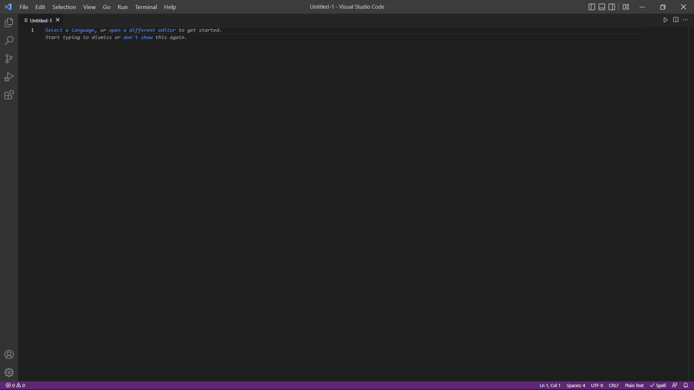
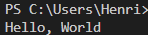

Set up a Python Enviroment in VS Code
We will be going over how install and set up python enviroment on your computer.
This tutorial should will be focused on a windows machine but the steps are
very similar if you are installing on a Mac. (NOTE - Mac Os comes with Python 2.7 pre-intalled, but we
will be installing and using python 3)
Step 0 - Checking Python Version
Before we start it is smart to see if you already have
python installed on your system. To check if you already
have it installed open a command promt on your machine.
Windows Shortcut - Windows Key + R then type "cmd" then Enter
Mac Shortcut - Cmd + Space
Type this command and then enter.
python --version
This will return with either the lastest version of python
that you have installed or will return not found.
C:\Users\Henri>python --version
Python 3.10.1
For this tutorial you will want atleast version 3.9. If you already
have this version or newer installed you are all good and can
start progrmming! If you dont have a new version of Python
or no version of python installed continue to Step 1.
Step 1 - Downloading Python
To get started installing python go to their
Offical Download Page
and download the latest version. The installer wizard will pop up and prompt
you to click the installation style you'd like.

Make sure you click add python to PATH. This makes
sure that python can be recongized anywhere in the system.
After that click Install Now
Congrats! Python is now installed.
Step 2 - Downloading Visual Studio Code
Next we have to install Visual Studio Code (VS Code for short).
First go to the Offical Download Page
and install the correct version for you computer. Follow the
promts on the installation wizard.
Once installed open up VS Code and click this button on the left
hand side.

This is the extensions menu. Here you can download many different extensiosn that
will help you build faster and cleaner looking code. Search python in
the text bar and install the first one by Microsoft.

After you have the extension you are all set up and ready to start coding!
Step 3 - Making a Basic Program
Here we are going to make a couple of basic programs so you can get an idea of how python works
First, click the file dropdown at the top left of the page and click new text file.

We will then click the link that says,"Select a language". This will
open up a dialogue box that allows you select whatever programming
language you want. We will type "python" and hit enter.
Then do control ctrl+s to save it. Give the file what ever name you like.
You'll notice that the file ends in .py. That means its a python file.
Now we can start coding! To start lets make a program that prints a simple "Hello, World"
print("Hello, World!")
The code above will print the message "Hello, World!" to the terminal.

Note - If your code doesn't print its possible you don't have the terminal open
to open. It open it go to the top nav bar and click View and then make sure terminal is checked.
Lets quickly look into the print function and talk about how it works.
When the print function is called it looks at the content inside the
parentheses and makes sure its a string. A string is defined when text
is inside quotation marks. It then takes this input and displays it
on the terminal page.
Step 4 - Basic Logic
Python also has basic logic that allows you to add,
subtract, multiply, and divide. Below are some examples
of how to perform these operations.
print(2+2) #4
print(2-1) #1
print(4*3) #12
print(10/5) #2
You can ignore the # as its used to comment in python. It
is just being used to show you the expected output.
You can also create varibles by using the syntax: varibleName = value.
Below is an example of it in python.
age = 4
print(age)
This allows you to save data in varibles that can be used later in your
program.
That is the end of this tutorial. For further learning I would
recommend
python.org